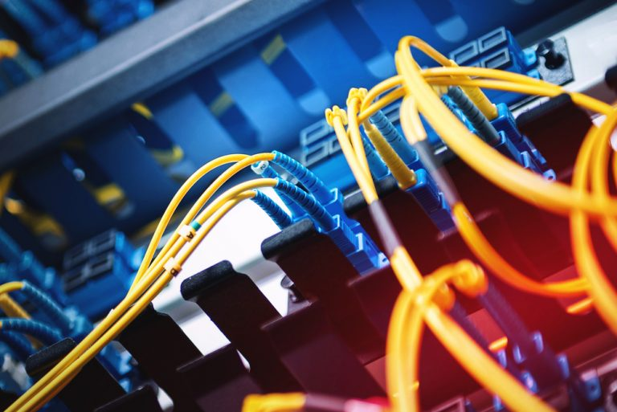
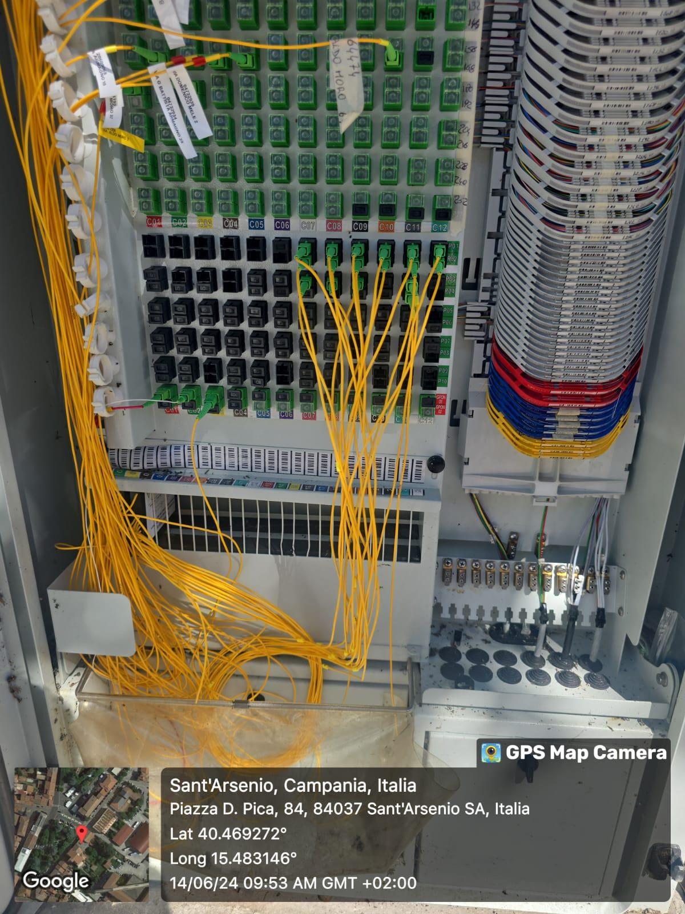
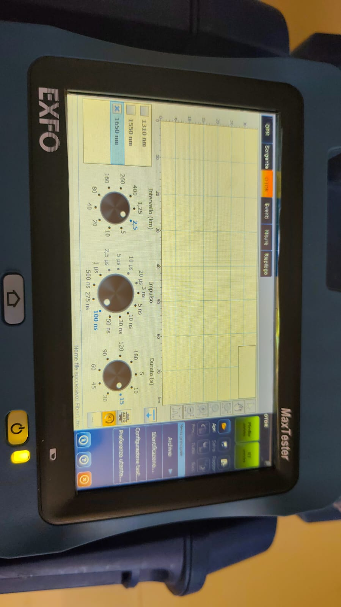

Analisi e strategia
Studio del mercato e dei bisogni dei clienti per definire obiettivi e piani di crescita.

La rete FTT-CAB (Fiber To The Cabinet) è una tecnologia di connessione in fibra ottica mista , che porta la fibra fino all’armadio stradale più vicino alla tua abitazione o azienda. Da lì, la connessione continua attraverso il cavo in rame tradizionale (VDSL o ADSL) fino all’utente finale. In pratica, la fibra ottica copre la parte più lunga e critica della rete, garantendo velocità elevate e stabilità, mentre il tratto finale in rame permette di collegare tutti gli edifici senza lavori invasivi.


La nostra visione è semplice: portare una connessione affidabile, moderna e progettata su misura in ogni realtà, che sia una casa, un’azienda o un’intera infrastruttura.
Con la nostra rete FTT-CAB, ti offriamo molto più di una semplice connessione:
Il work process di TBH Srl si sviluppa a partire dall’analisi del mercato e delle esigenze dei clienti,
con l’obiettivo di offrire soluzioni di telecomunicazione moderne e affidabili. L’azienda progetta e
realizza infrastrutture tecnologiche, garantendo qualità e sicurezza dei servizi. Una volta definita
l’offerta commerciale, TBH Srl gestisce la vendita e l’attivazione dei servizi attraverso canali
diversificati, accompagnando i clienti con supporto tecnico e amministrativo. La rete viene
monitorata costantemente per assicurare continuità e prestazioni elevate, mentre il customer care
rimane al centro della relazione con il cliente. Infine, TBH Srl investe in innovazione e ricerca per
integrare nuove tecnologie e mantenere un vantaggio competitivo nel settore.
Panoramica delle fasi operative dell’azienda di telecomunicazioni
*********
tbh@gmail.com
Tolfa (RM) Piazza Bettino Craxi 3 CAP 00059
| © TBH Srl 2024 | P.IVA 17496751003 | Tutti i diritti riservati | Sviluppato da CodeFactory |